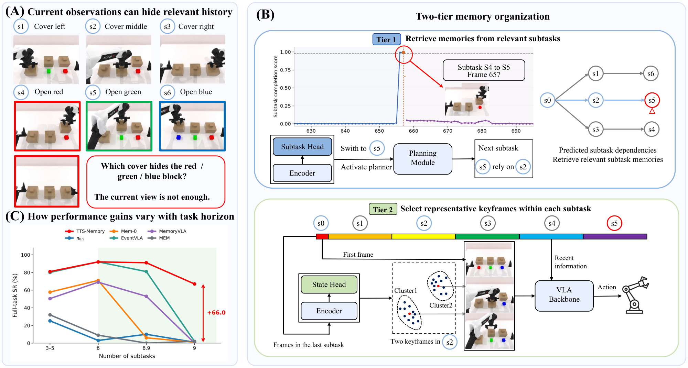

Swap Blocks

Overview of TTS-Memory for subtask-structured memory in long-horizon tasks. (A) The current observation may not reveal past information needed for the next action. (B) The first tier retrieves memories from relevant subtasks through a dependency DAG. The second tier selects representative keyframes within each subtask through adaptive clustering. (C) RMBench full-task success versus the number of subtasks. The point at 3–5 averages five tasks. The points at 6, 6.9, and 9 are Cover Blocks, Blocks Ranking Try, and Press Button, respectively. Observe and Pickup is omitted because every compared method has low success there.
Abstract. Long-horizon robotic manipulation is often non-Markovian: irreversible state transitions can make earlier information unavailable in subsequent observations. The performance of vision-language-action (VLA) models can degrade in this non-Markovian setting, where selecting the correct action requires information from earlier states. Existing memory mechanisms extend context through recent-frame windows, compressed latent stores, or similarity-based keyframe retrieval. However, they do not explicitly identify relevant completed subtasks or select frames within them that capture pre-transition states no longer visible in subsequent observations. We introduce TTS-Memory, a two-tier memory framework for long-horizon VLA policies. The first tier segments execution into subtasks and uses a directed acyclic graph (DAG) of subtask dependencies to guide retrieval of relevant completed subtasks. The second tier adaptively selects keyframes that represent the different states within each retrieved subtask. The action model uses cross-attention fused keyframe representations and a separately preserved representation of the initial observation. We evaluate TTS-Memory on RMBench, the SafeLab chemistry-lab simulation benchmark, LIBERO, and real-robot tasks with a Franka arm. On RMBench, TTS-Memory achieves an overall success rate of 73.0%, compared with 41.2% for Mem-0, with the largest gain on tasks that require multiple past observations (23.3% to 71.8%). Ablations show that DAG filtering matters most on these tasks, and that adaptive keyframe selection performs comparably to three keyframes per subtask while storing about 30% fewer frames.
@misc{wang2026ttsmemory,
title={Remembering What Matters: Dependency-Guided Structured Memory for VLA Policies},
author={Wang, Peishuo and Bai, Fengshuo and Li, Yufeng and Chou, Tawei and Xu, Yinda and Wen, Ying and Yang, Yaodong and Gao, Chen and Zheng, Zhenzhe and Wu, Fan},
year={2026}
}